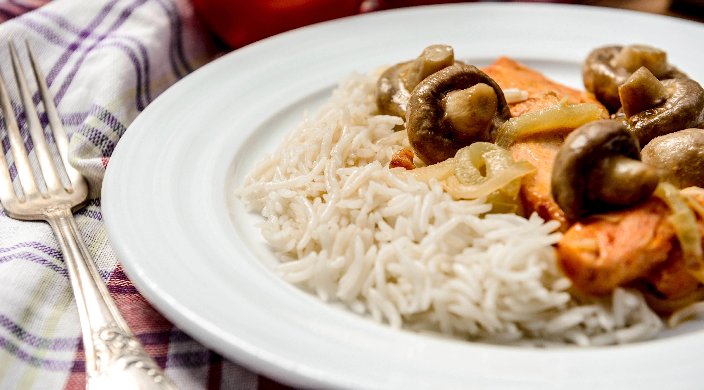

Arroz Cremoso de Hongos y Pollo

Descripción
El Arroz Cremoso de Pollo y Hongos es una preparación que destaca por su textura aterciopelada y su profundo perfil de sabor "umami". Se trata de un plato donde la suavidad del arroz, cocido lentamente hasta alcanzar una consistencia similar a la de un risotto, abraza trozos de pollo jugosos y tiernos.
Ingredientes
- - 2 Cucharadas grandes Mantequilla.
- - 1 Pechuga de Pollo, picada en cubos.
- - 1 Cucharada grande Aceite De Oliva.
- - 1 Cucharada grande Sazón Completo Maggi.
- - 1/2 Cebolla Blanca, picadita.
- - 200 Gramos Hongos, rebaanados.
- - 1 Taza Arroz blanco.
- - 2 Unidades Ajo.
- - 1 Sobre Caldo en Polvo Gallinita Maggi.
- - 1 Taza Agua.
- - 1 Taza Crema De Leche Nestlé.
- - 2 Cucharadas grandes Puerro.
- - 2 Cucharadas grandes Queso Parmesano, rallado.
Pasos
-
Paso 1:
Sazona el pollo con la cucharada de Sazón Completo Maggi y aparta.
-
Paso 2:
En una olla o sartén profunda agrega la mantequilla y el aceite de oliva, cocina los hongos, cuando estén dorados agrega el ajo y la cebolla sofriendo todo durante unos 5 minutos.
-
Paso 3:
Agrega el pollo y cocina hasta que esté bien dorado. Incorpora el arroz y séllalo, vierte la taza de agua y deja cocinando hasta que se absorba. Agrega la taza de Crema De Leche Nestlé® y sigue cocinando durante unos 10 minutos. Agrega el sobre de Caldo en Polvo Gallinita Maggi y cocina hasta que el arroz tenga la textura de tu preferencia.
-
Paso 4:
Termina agregando queso parmesano y puerro fino picadito.
-
Paso 5:
Sirve de inmediato.